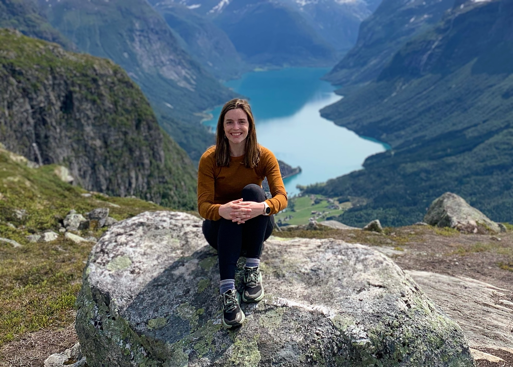

Hello! I am an Assistant Professor in the Department of Mathematics and Statistics at Vassar College. My research interests are in topological data analysis (TDA), computational topology and geometry, and mathematical biology. I regularly teach undergraduate statistics, data science, and math classes. In addition to research and teaching, I also care about making the scientific community more welcoming and accessible. I contribute to various outreach programs that focus on this. More details can be found in my CV.
Links: CV. google scholar.
linkedin.
Email: rbelton@vassar.edu Pronouns: she/her
News
- August 2025. I am giving a talk at the Joint Statistical Meetings in the Novel Methods and Applications for Time Series Data session.
- April 2025. My Vassar colleagues and I are organizing DataFest. This is a weekend long data analysis competition for undergraduates. We encourage students in the Poughkeepsie region to participate.
- April 2025. Enrique Alvarado and I are organizing a special session at the AMS Eastern Sectional Meeting. We have a fantastic line up of presenters on Data Driven Methods in Biology.
- February 2025. Paper Acceptance! G-Mapper: Learning a Cover in the Mapper Construction has been accepted for publication in the SIAM Journal on Mathematics of Data Science (SIMODS)!
- January 2025. New preprint! In Discrete Level Set Persistence for Finite Discrete Functions, we study sublevel set and superlevel set persistent homology on discrete functions through the perspective of finite ordered sets of both linearly ordered and cyclically ordered domains. We prove duality of filtrations of sublevel sets and superlevel sets that undergirds a range of duality results of sublevel set persistent homology without the need to invoke complications of continuous functions or classical Morse theory. We show that Morse-like behavior can be achieved for flat extrema without assuming genericity. Furthermore, we discuss aspects of barcode construction rules, and surgery of circular and linearly ordered sets. We have a javascript web applet where users can play around with discrete sublevel set persistence.
- January 2025. I am teaching MATH 341: Statistical Inference and MATH 244: Intermediate Data Science.
- December 2024. I am giving a talk at the Joint Meeting of NZMS, AustMS, and AMS in the special session on Applied and Computational Topology.
- August 2024. New preprint! In Any Graph is a Mapper Graph, we investigate the inverse problem for the popular Mapper algorithm: Given a dataset and graph, does there exist a set of Mapper parameters such that the output Mapper graph of the dataset is isomorphic to the graph? We provide two constructions that affirmatively answer this question. We also show how these constructions generalize to simplicial complexes. Lastly, we show how the lens function can be viewed as continuous, and can be extended to a Lipschitz or m-times differentiably continuous function when the dataset is a subset of Euclidean space.